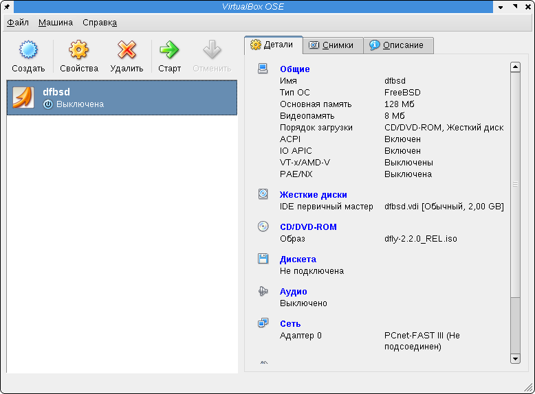

Решил посмотреть на DragonFly BSD 2.2 и файловую систему Hammer. А для этого соответственно нужен компьютер. Запускать на настольном компе не хотелось, т.к. для этого пришлось бы отказаться от привычной "рабочей" среды. Поэтому я решил запустить DragonFly в эмуляторе - так и привычная среда останется на месте и смотреть на систему можно будет долго и внимательно :)
Решил попробовать два эмулятора - VirtualBox и QEmu.
Для начала решил поставить VirtualBox. Среда нормально запускалась, но эмулировать отказывалась наотрез - не признавала версию своего модуля ядра vboxdrv. Пробовал устанавливать пакет с модулем, собранным специально для моего ядра, но VirtualBox не хотел признавать и его.
Затем решил поставить QEmu. QEmu нормально запустился, всё-таки сообщив о том, что он не может получить доступ к устройству /dev/kqemu. Это устройство создаётся модулем ядра и позволяет существенно ускорить скорость эмуляции: этот модуль позволяет выполнять инструкции эмулируемого процессора непосредственно на реальном процессоре.
Собрать модуль kqemu мне тоже не удалось, компилятор ругался на отсутствие регистров rax и т.п. Это регистры 64-битного процессора. Не смотря на то, что я пользуюсь 32-битной системой, у меня установлено ядро linux-image-2.26-1-amd64, заточенное на 64-битный процессор. Соответственно для 64-битного ядра нужно собирать 64-битный модуль, а компилятор наотрез отказывался признавать существование 64-битных процессоров, поскольку сам был заточен на 32-битную среду.
Ну что ж, подумал я, копаться с компиляцией я не стану - это непроизводительная трата времени. И решил поставить ядро linux-image-2.26-1-686. После перезагрузки в новое ядро, как и ожидалось, у меня отвалился модуль nvidia. Я соответственно залогинился в консоли под root'ом и решил его восстановить, заодно установив и модуль kqemu:
# aptitude install module-assistant # m-a a-i nvidia # m-a a-i kqemu
Дальше я перезапустил kdm:
# /etc/init.d/kdm restart
И вошёл в KDE.
Теперь я решил вновь установить VirtualBox с модулями для нового ядра:
# aptitude install virtualbox-ose-modules-2.6.26-1-686 virtualbox-ose
Дальше нужно загрузить модуль ядра vboxdrv. Чтобы он сразу создал устройство /dev/vboxdrv с нужными правами доступа, перезапустим udev. Пакет добавил к udev новые правила и нужно, чтобы они вступили в силу:
# /etc/init.d/udev restart
Теперь подгрузим ядро и посмотрим права доступа к устройству /dev/vboxdrv:
# modprobe vboxdrv # ls -la /dev/vboxdrv
Видим, что право доступа имеют пользователь root и группа vboxusers. Добавим себя в группу vboxusers (с сделал это с помощью vi):
# vi /etc/group
Теперь, чтобы получить права группы, в которую мы себя добавили, нужно перелогиниться. Я вышел и вошёл в KDE.
Запускаем VirtualBox OSE - графический интерфейс программы показался мне сильно похожим на Virtual PC, в котором я года два назад по необходимости запускал Windows 98.
Ниже - скриншот основного экрана программы с созданной виртуальной машиной DragonFly BSD.
К сожалению, практически сразу после загрузки с образа диска, система зависала и продолжала отъедать 70-99% процессорного времени компьютера, не подавая никаких признаков жизни:
Окно с изображением экрана эмулируемой системы захватывает клавиатуру. Чтобы эмулируемая система "отпустила" клавиатуру, нужно нажать комбинацию клавиш, указанную в строке статуса окна в правом нижнем углу, у меня это была правая клавиша Ctrl.
Никакие попытки поменять настройки эмулируемой машины не дали результата и загрузка системы неизбежно застывала на одном и том же месте. Попытки загрузить DragonFly BSD в безопасном режиме или режиме без поддержки ACPI результатов тоже не принесли.
Далее я решил попробовать QEmu. Система уже до этого зарекомендовала себя положительным образом, правда без поддержки эмуляции на уровне ядра системы. Именно поэтому я и решил попробовать VirtualBox, но он меня разочаровал, о чём и написано выше.
Итак, приведём в чувство установленный только что модуль kqemu. Во-первых, пакет с модулем kqemu тоже добавляет правило к udev, поэтому если вы не перезапустили udev при установке VirtualBox, сделайте это сейчас:
# /etc/init.d/udev restart
Подгрузим новый модуль ядра и посмотрим на права доступа к устройству:
# modprobe kqemu # ls -la /dev/kqemu
Правила udev предписывают давать доступ на чтение и запись в это устройство любым пользователям системы. Если вы не хотите, чтобы это было так, можете создать группу для пользователей qemu и дать права доступа к устройству только им. Эти правила находятся в файле /etc/udev/rules.d/91-permissions.rules. Строчку:
KERNEL=="kqemu", MODE="0666"
Можно заменить на такую:
KERNEL=="kqemu", MODE="0660", GROUP="kqemu"
Затем добавить в систему группу kqemu, перезапустить udev и перезагрузить модуль kqemu:
# groupadd kqemu # /etc/init.d/udev restart # rmmod kqemu # modprobe kqemu
Теперь можете добавить себя в только что созданную группу и перелогиниться.
Чтобы модуль kqemu загружался вместе с системой автоматически, его загрузку можно прописать в файле /etc/modules.
Продолжим установку qemu:
# aptitude install qemu
Теперь создадим файл размером 1 гигабайт, который будет использоваться в качестве образа диска эмулируемой системы. Для этого я воспользовался командой dd (официальная документация qemu рекомендует создавать образ дисков с помощью утилиты qemu-img):
# dd if=/dev/zero /home/stupin/dfbsd-disk.bin bs=1M count=1024
Запустить новую виртуальную машину можно таким образом:
$ qemu -cdrom /home/stupin/dfbsd-2.2.0_REL.iso -hda /home/stupin/dfbsd-disk.bin -boot d
Последняя опция указывает произвести загрузку с образа компакт-диска. Окно эмулируемой системы захватывает клавиатуру, отключить захват можно с помощью одновременного нажатия клавиш Ctrl и Alt (когда клавиатура захвачена, эта комбинация клавиш высвечивается в заголовке окна).
QEmu на удивление легко преодолел рубеж загрузки, на котором останавливался VirtualBox и я установил систему на виртуальный диск. С настройкой сети я пока не заморачивался, хотя без неё как без воздуха, разобраться с настройкой и настроить всё равно придётся. Кроме всего прочего, QEmu производит впечатление количеством эмулируемых архитектур (x86, x86_64, Sparc32, Sparc64, PowerPC, ARM, MIPS - в том числе поддерживается эмуляция одного процессора на другом) и возможностями проброса вовнутрь эмулируемой системы USB-устройств реального компьютера, возможностью создания снимков системы (все изменения, которые система будет производить с диском будут записываться в отдельный файл снимка, так что систему легко можно откатить до прежнего состояния), эмуляцией последовательный устройств ввода/вывода, эмуляции графических и сетевых адаптеров разных моделей.
Также в репозитории Debian я нашёл два графических интерфейса для запуска QEmu: qemu-launcher и qemulator.
Первый запускался и показывал окно с настройками, но образы виртуальных машин запускать отказывался:
Второй же оказался довольно приятным и вполне рабочим:
С помощью него я легко запустил ранее созданную с помощью консольной версии эмулятора виртуальную машину:
Дело осталось за немногим - разобраться с настройкой сети и можно будет пощупать Hammer.